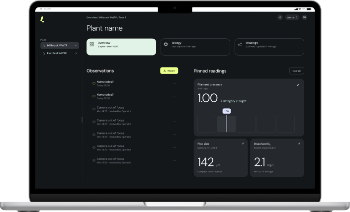

your server
Lir telegraph

What operators get
Biology indicators
Proxi SVI
Proxi SV30
Microscopy reports
Early alerts
On early signs of process upsets
Observations
On how to keep your biology stable